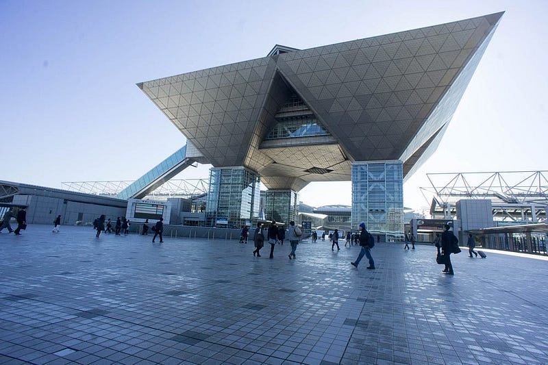

最後のYAPC::Japanと聞いたのでYAPC::Asia/JPAの（私）歴史
最後のYAPC::Japanと聞いたのでYAPC::Asia/JPAの（私）歴史

これはインターネットの歴史として残すので、それ以上でもそれ以外でもないです。あと自分の記憶の中の話なので間違ってたすみません。
発端はこちら。YAPC::Japanが2026年でいったん幕を下ろすということです。今年は私がキーノートに呼ばれているのですが、なんで僕なんだろうな、とは思っていたんですよ。でもこれを呼んでちょっと腑に落ちました。
私 lestrrat こと牧とYAPC::Asia Tokyoとの付き合いは2006年ごろかと思います。いつから参加してるのか我ながら記憶にないけど、主宰としてはともかくスタッフとしては初参加以降毎年なんらかの形でかかわってました。そしてJPAというものを作ったり2015年で最後のYAPC::Asia Tokyoを開催して、一度YAPCというものの区切りをつけたりもしました。
今回YAPC::Japanが2026年をもって終わるとのことで、もう時間がたってて知ってる人も少ないだろうし、そもそもまとめてインターネットに書いてないし…ってことで思い出話を書きます。
YAPCは確か日本では最初はPerlとRubyの合同イベントから始まってると聞きました。そのころは知らないので気になる方は調べてみてください。
私が参加した最初のころのYAPCはmiyagawaさんが音頭を取っていて、本当にただの友人同士で集まって運営してるだけでした。僕はアメリカから帰国してきて知り合いも少なかったので顔を売る意味合いもあって参加を決めた口です。
運営をしているひとたちの一人Oさんが財布役として数百万単位のお金の管理をやっていたんですが、本当に大変そうだったんですよね。で、あるとき僕は運命の一言を言ってしまうんですよ
「あらたに法人作ってそこで管理すればいいじゃん」
と。これがどこでどうねじれたのか、「来年のYAPCは牧がやる」ということになっており、なんか知らんけど僕が法人を用意してやることになったんですよね。
確か僕がやった一回目はすでにその時点で存在していた私の会社の株式会社 endeworksが財布になったと思います。でもそれで続けると色々道義的に問題がある（儲かったら僕だけ儲かっちゃうし、損するときも僕だけ損するし…）からもっとこう公器っぽいものを作るべきだよね、って言って、Japan Perl AssociationことJPAを作りました。
出典: フリー百科事典『ウィキペディア（Wikipedia）』 Japan Perl Association（ジャパン・パール・アソシエーション、 JPA）とは、 プログラミング言語 Perlの技術および文化の啓蒙・促進のために作られた…ja.wikipedia.org
今見たらWikipediaにもなんも情報ないのですね。書いておかないと歴史がなくなっちゃう！
JPAは最初合同会社として作るか、それとももう（当時まだあった）有限会社にしちゃうか、などと悩んだのですが、ちょうど2008年のタイミングで一般社団法人という形態が使えるようになったので、「これだ！」となり、登記設立しました。とりあえず私がJPAにいる間は私がずっと代表理事でした。
ちなみに最初のころは在日アメリカ人のEとよくこの話を相談してたのですが、あいついつのまにか連絡が途絶えたと思ったらアメリカに帰国しちゃったので、登記関連のこと全部自分でやったのよね…
まぁというわけで僕もendeworksからいくばくかのお金を入れたりしつつ、当時Perlを使っていた会社をほぼ全て巻き込み、資金をだしてもらい、活動開始できるところまで持っていったのです。
なおこの時に協力していただいたすべての会社には感謝しかないのですが、その中でも通常の資金の他に基金という名目で追加のお金を出していただいた（※）某社（迷惑がかかるかもしれないので敢えて書きません）と、プレスリリースのお手伝いや、その後大切なパートナーとなっていただいた櫛井さんを紹介していただいたLivedoor社には本当に本当に頭があがりません。
櫛井さんと私についてはインターネット上にいくつか文献があると思います。気になったら探してみてください。
（※）その後私がJPAを離れる前に全額返却しました。
JPAはYAPC::Asia Tokyoの運営をやるために作ったのではありますが、それだけだとお金のまわりが不安すぎました。
1年に一回お祭りをするけど、そのお祭りが黒字化するとは限らないわけですよ。黒字化しなかったら他の何かで補填を考えないといけないわけで、そうすると保険としてそれ以外の仕組みを考えないといけないよなぁ… ということで講師派遣とか他のことを色々考えてやってみたのですが、まー… 基本的に商才がないのでしょうね。全然うまく回りませんでした。
そういう状況もあったので、YAPC本体ではもうまるで現代のクレイジーな資本主義家のごとく、スポンサーを付けられるところはすべて付けました。日本のコミュニティカンファレンスでバックパネルとか真っ先に作ってたのは確実に私だと思います。
バッグのデザインスペースを売ったり、Tシャツのデザインスペースを売ったり、まぁとにかく黒字にすることに命をかけていました。おかげ様でその後確実に収益があがるところまできたので2015年の最後の会ではそれなりの大花火をあげられたのではないかと思います。
もちろんそれだけではなくて、Perlという技術そのものがなかなかその… メインストリームにならない… ニッチ… だったので… とにかく盛り上げてやろうという精神で色々やりましたね。
ず～～～～っとLTをやるLTthonも2012年の東大の回で初めてやったんじゃないかな。
NDAなしでは入れない、本当にあった怖いIT話だけを聞ける大人のYAPCは確か2013年くらいにやりました。
巫女さんに祈祷してもあってバグ除けお守りを作った会もありましたね。
ベストトーク賞とか、景品を出すとかも我々がやり始めたのではないかなぁと思います。その後ベストトーク賞という制度に関しては考えが変わってしまったのでもうやることはないと思いますが、あれはあれでエキサイティングでよかった。
あと2010年くらいから、「トークの内容がPerlでなくとも構わない！どっかでPerlって一言いえばOK」ってやりだしたのも僕らです。
ブログを書くまでがYAPC！は櫛井さんが言い出しっぺかもしれない。SEOというか、口コミの生のフィードバックを情報の拡散をすごく重要視してました。
あの頃の僕と櫛井さんはミーティングしても別に「この会のあるべき方向は…」とかしゃべった記憶がないですけど、多分「なんかおもしろいことやろうぜ」という気持ちだけはなんかつながってたんじゃないかなーと思います。僕がお金にうるさくて嫌がられたって記憶以外、企画内容でそんな喧々諤々した記憶もないし。
この間にJPAは少しずつ理事を変えたり、資金繰りに関してはぼちぼちな状態になったり、色々と変化はありましたが、基本的に私が引っ張って行ってる状態は変わりませんでした。
僕のリーダーシップがよかったかどうか、それを望まれていたかどうかは神非ざる私にはわかりませんが、ともあれ、私がYAPCとJPA原動力であり、SPOFであったのは確かです。
2014年なんかはYAPCの主宰は私はやらなかったのですが、続かなかったですし、やはりこういうのは向き不向きがあるんですよね。私は10年近くもったのでそれなりにできたほうだとは思うのですが、それでもやはりタイムリミットが近づいていました。
一言で言えば私はその当時のYAPC::Asia Tokyoが主に向き合っていたWebという技術にそろそろ限界を感じていて、正直に言うと宇宙とかそういう方向とWebとかで培った技術の融合とか、そっちに興味があったのですよね。あとハードウェアとか、ゲームとか。ソフトウェアに軸足を置いていても、もうRESTとかGraphQLとかDBとかのコミュニティとは段々心が離れていた。
また同時に、子供ができ、人生のプライオリティが自分から子供に移っていたのもこの時期です。この段階で心が離れつつあるイベントをひょっとすると今後未来永劫面倒を見ないといけないかも… というのは向き合うのがつらい想像でした。
そして2014年があり、また僕が主宰をしないと2015年にYAPCが開催できないと分かった時点で最後の花火をあげる、ということを決めたのでした。本当はJPAもその時に清算しようと思っていたので法定清算人とか色々調べたのですが、有志が継続するということだったので、「ではお任せいたします」ということでお任せしました。
あ、すっごい余談なんですが、私退任時にしっかりYAPCで稼いだ中から100万円の退職金をもらいました。口さがないこという人も若干名いたんですけど、あれだけ労力入れて100万円なんだから、まぁ最低賃金どころじゃないですよ… 自身の退職金は自身で決められないので理事会に承認してもらってありがたく頂戴しました。なんかいい話ばっかしていい人ぶるのもあれなんで初めて書きました。
あれから10年たって、そして冒頭の記事です。揶揄でもなんでもなく、時代は巡るんだな、という月並みな感想です。僕だったらJPAも清算してしまうところですが、それでもまだ他の活動を続けるということなので、それはもう脱帽ものですね。がんばってほしい。
というわけで以上、AIの力も借りずに賞味1時間で書きました。誤字脱字があったらすみません。